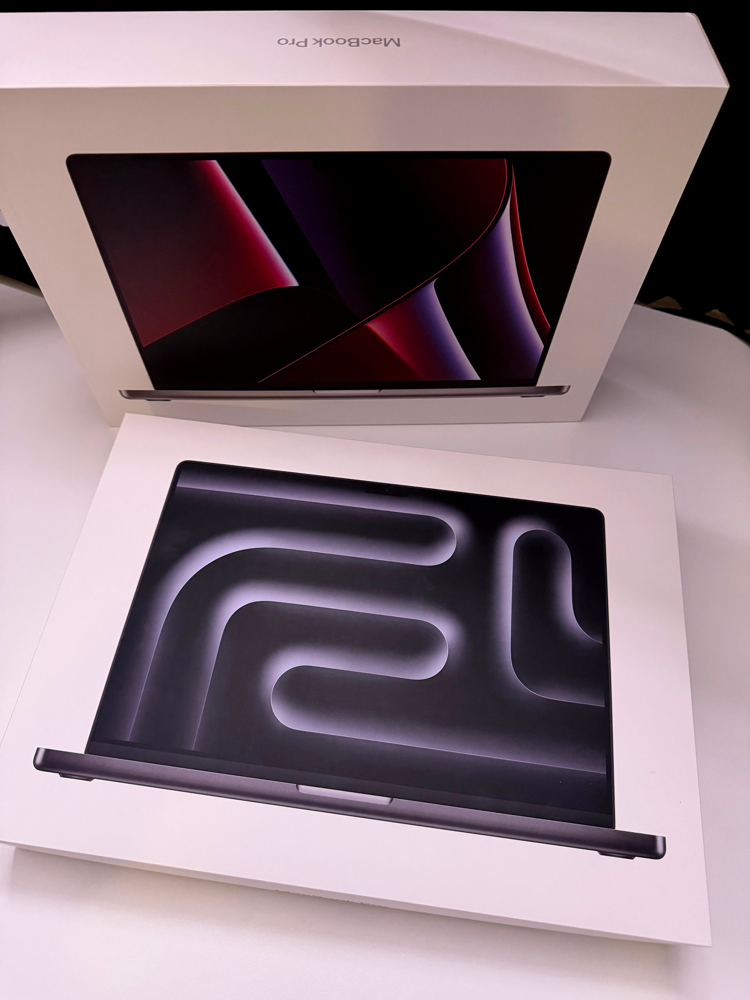

Upgrading from M2 Pro to the New M5 Pro Max: Is It Worth It?
Today Apple introduced a new generation of MacBook Pro machines powered by the M5 Pro Max chip. As someone working in photo and video production, I decided to upgrade immediately. But the obvious question is: why upgrade when I was already using a MacBook with the M2 Pro chip? For many people, the M2 Pro is still a very powerful machine. In fact, it’s more than capable of handling most professional workflows even today. That raises a fair question: Is upgrading after just a few years really necessary, or is it simply falling for Apple’s marketing cycle?
In my case, the decision wasn’t just about owning the newest device. It was about performance, workflow efficiency, and future-proofing the tools I rely on every day.
Coming from the M2 Pro
My previous machine was a MacBook Pro with the M2 Pro chip. At the time I bought it, it was an excellent choice for creative work. It handled large photo libraries, 4K video editing, color grading, and heavy multitasking without major issues. For a long time, it felt like there was no real reason to upgrade. The machine was fast, reliable, and portable — exactly what you want from a laptop used in professional production. But over time, as projects become larger and workflows more complex, even powerful machines start to show their limits.
Why Consider the Upgrade?
Working in photo and video production means dealing with increasingly demanding workloads:
higher-resolution cameras
larger RAW files
more complex video timelines
heavier use of effects, color grading, and AI tools

Each of these things slowly increases the pressure on your hardware. While the M2 Pro was still capable, the idea behind upgrading to the M5 Pro Max is simple: reduce waiting time, improve rendering performance, and make the workflow smoother overall. Time matters when you work with media production. Faster exports, smoother playback, and better performance during editing can add up to hours saved every week.
The Real Question: Is the Performance Difference Noticeable?
This is probably the most important question anyone considering an upgrade will ask. Apple’s chip development over the past few years has been extremely aggressive. Each generation brings improvements not only in raw CPU and GPU power, but also in memory bandwidth, media engines, and AI acceleration.
For creators, the media engines and GPU performance are often the biggest game changers. If the M5 Pro Max delivers significantly faster video encoding, smoother timeline playback, and better handling of large RAW files, then the upgrade becomes less about luxury and more about productivity.
Upgrade or Not?
The truth is that upgrading from an M2 Pro is not something everyone needs to do. For many people, that machine will remain more than powerful enough for years. But if your work depends on speed, reliability, and handling increasingly demanding media formats, upgrading to the latest generation can be a strategic decision rather than an impulsive one. For me, the MacBook is not just a computer. It’s the core tool of my entire workflow. And when your work depends on your tools every single day, investing in performance can make a real difference.
I’ll definitely share my experience with you after a few months, once I’ve completed multiple projects on this new MacBook.
Štefan

← Back to blog